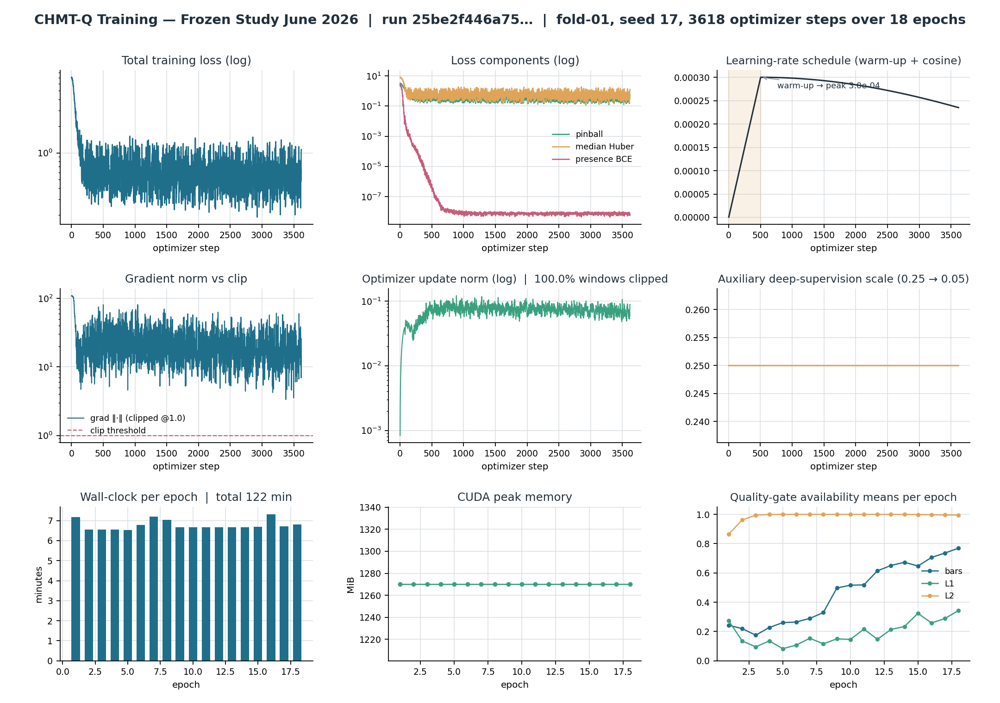
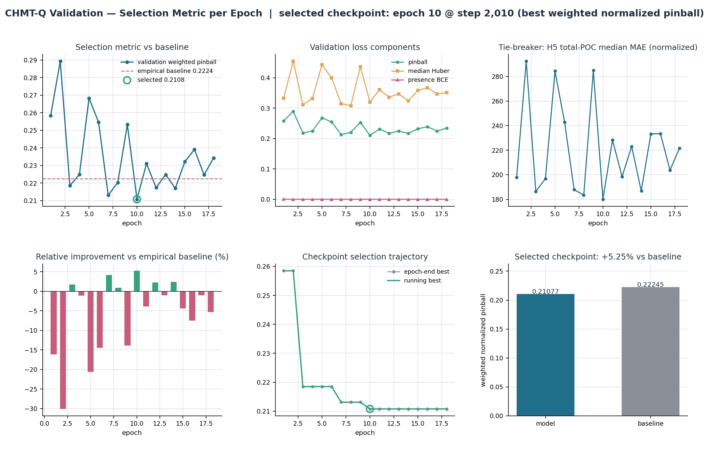
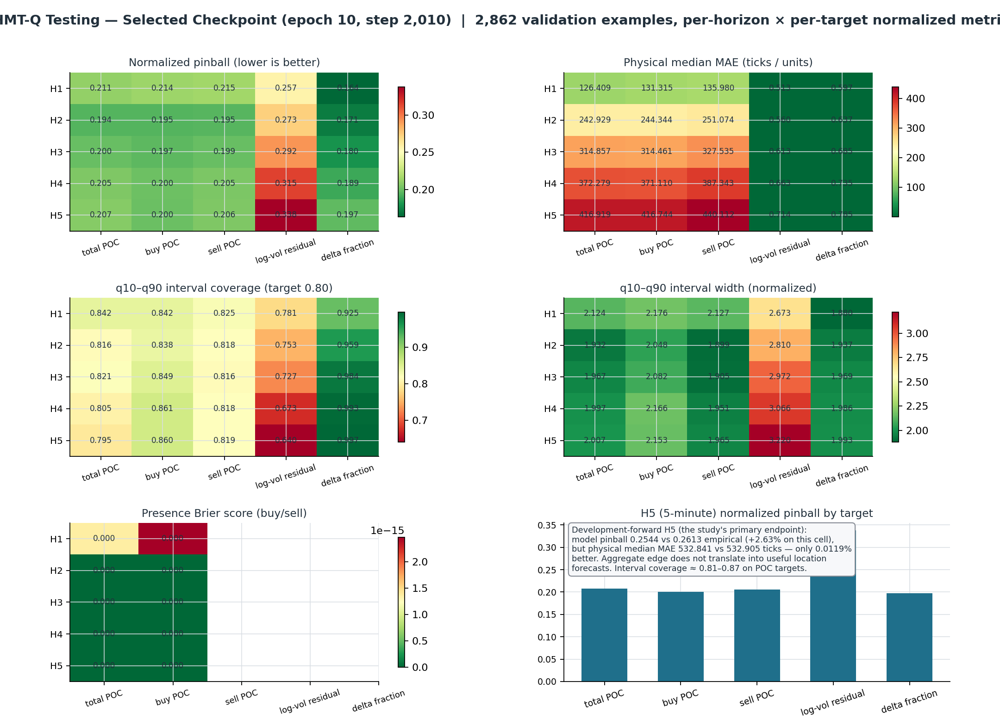
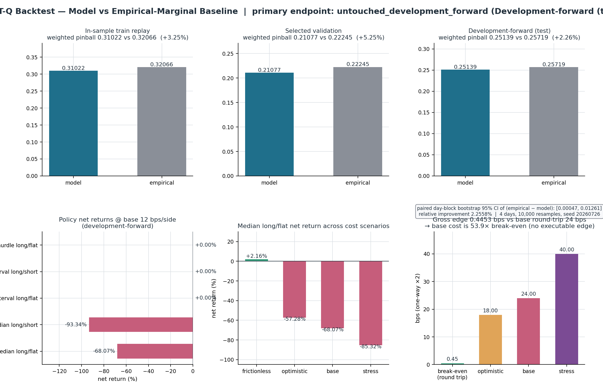
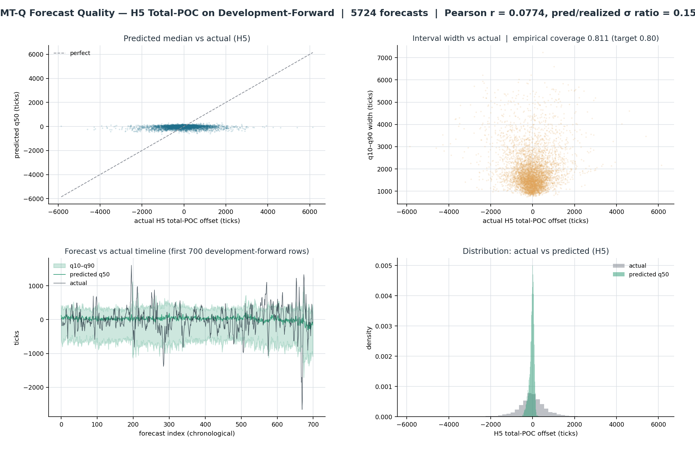
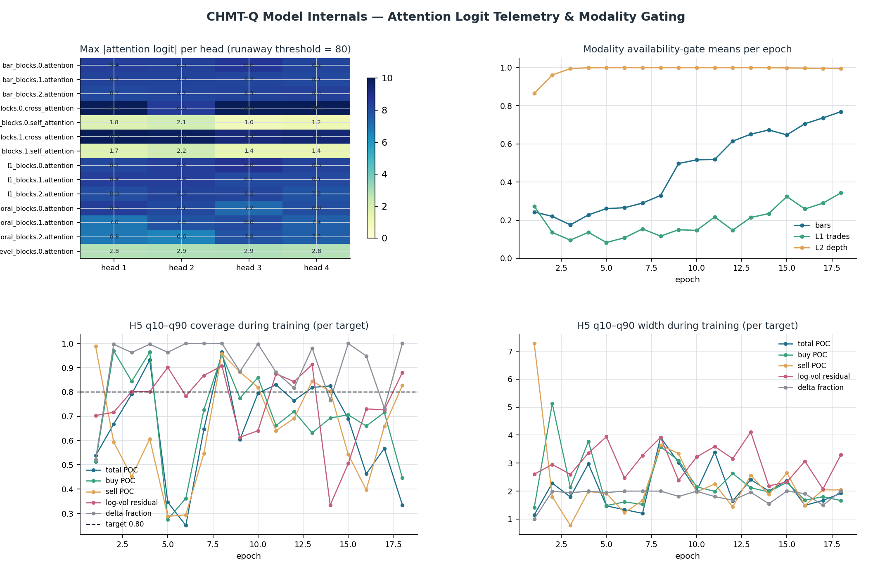

CHMT-Q Training & Testing Visualizer
Read-only dashboard rendered from the frozen June 2026 study artifacts (fold-01, seed 17, selected epoch 10 / step 2,010). Research-only, non-promotable.

Optimizer telemetry across all 18 epochs

Validation selection curves and baseline comparison

Per-horizon × per-target testing performance grids

Backtest partitions, policies, and cost scenarios

H5 forecast quality on development-forward data

Attention telemetry, gating, and coverage drift